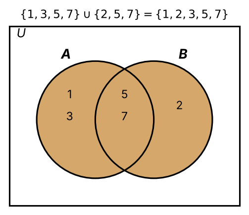
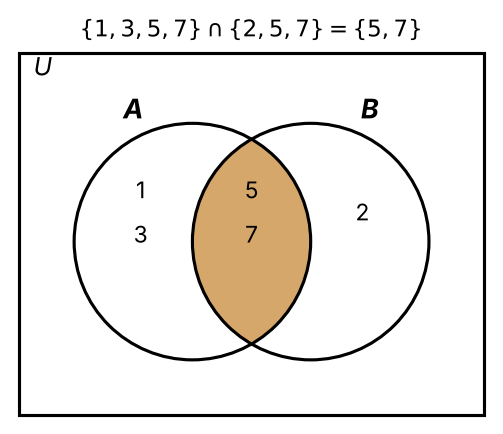
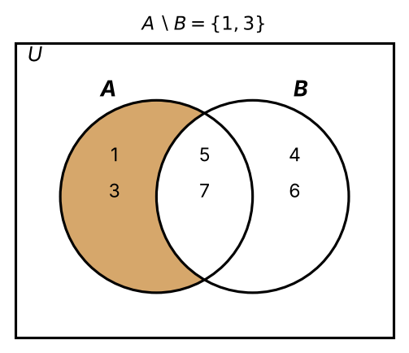
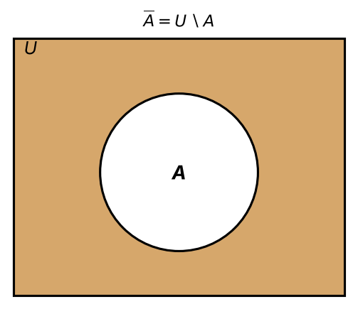
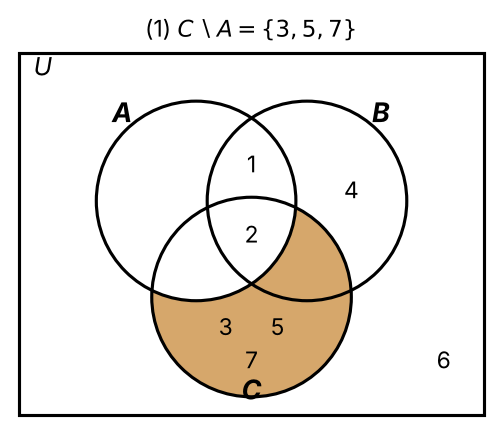
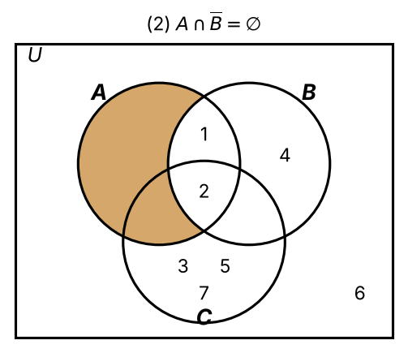
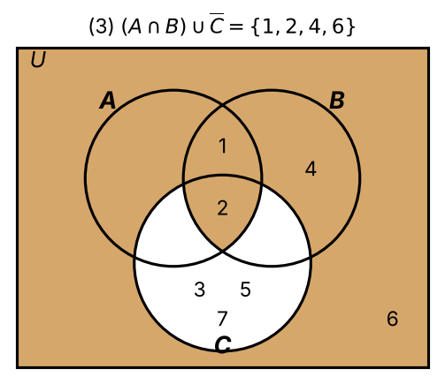
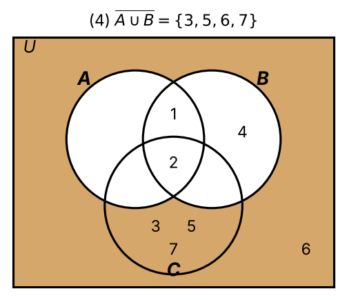
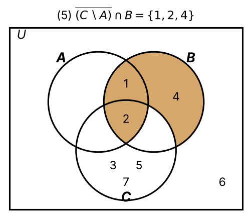

Set Operations
Set Operations
Operations for combining, comparing and manipulating sets:
- Union
- Intersection
- Difference
- Complement
\(:=\) means "equal by definition".
Union (Def 7.5)
\[ A \cup B := \{ x \mid x \in A \text{ or } x \in B \} \]
- Inclusive "or": \(x\) may be in both \(A\) and \(B\).
Example:
- \(\{1,3,5,7\} \cup \{2,5,7\} = \{1,2,3,5,7\}\)

Intersection (Def 7.6)
\[ A \cap B := \{ x \mid x \in A \text{ and } x \in B \} \]
Example:
- \(\{1,3,5,7\} \cap \{2,5,7\} = \{5,7\}\)

Difference (Def 7.7)
\[ A \setminus B := \{ x \mid x \in A \text{ and } x \notin B \} \]
Example:
\(A = \{1,3,5,7\}\), \(B = \{4,5,6,7\}\) \(\Rightarrow\) \(A \setminus B = \{1,3\}\).

Complement (Def 7.8)
All sets under consideration are subsets of a universal set \(U\). \[ \overline{A} := U \setminus A = \{ x \in U \mid x \notin A \} \]
Example:
- Everything (in \(U\)) that is not in \(A\).
- Depends on the choice of \(U\).

Link to logic
| Set operation | Logical connective | Reading |
|---|---|---|
| Union \(\cup\) | Disjunction \(\lor\) | or |
| Intersection \(\cap\) | Conjunction \(\land\) | and |
| Complement \(\overline{A}\) | Negation \(\neg\) | not |
Worked example
\(U = \{1,\dots,7\}\)
\(A = \{1,2\}\)
\(B = \{1,2,4\}\)
\(C = \{2,3,5,7\}\)
\(C \setminus A = \{3,5,7\}\)

\(\overline{B} = \{3,5,6,7\}\), so \(A \cap \overline{B} = \varnothing\)

\(A \cap B = \{1,2\}\), \(\overline{C} = \{1,4,6\}\), so \((A \cap B) \cup \overline{C} = \{1,2,4,6\}\)

\(A \cup B = \{1,2,4\}\), so \(\overline{A \cup B} = \{3,5,6,7\}\)

\(\overline{C \setminus A} = \{1,2,4,6\}\), so \(\overline{(C \setminus A)} \cap B = \{1,2,4\}\)

Tip: compute inner expressions first, then complement relative to \(U\).